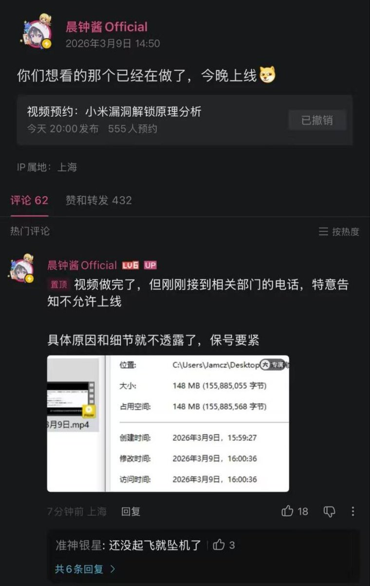

𝐀𝐬𝐡𝐥𝐞𝐲 𝐁𝐥𝐨𝐜𝐤🍥🌹🇹🇼🇪🇺🏳️⚧️
@bolckAshley
最近這些事情，恰恰驗證了你國這種巨頭型民營企業≈準國企，且不說你國這種巨頭型民營企業內部幾乎100%都有「黨委」這種國家權力機構的延伸，極客灣那個橫評影片只是揭了國產廠商的遮羞布就被下架，這些廠商背後是誰我不好說

奶昔🥤
@realNyarime
B站UP主“晨钟酱Official”原定当晚20:00发布《小米漏洞解锁原理分析》，后在动态称视频已制作完成，但接到“相关部门”电话，明确不允许上线，未说明具体原因，并称这是“保号”，目前该动态已删除。
无形的大手，原来分析个小米漏洞解锁也会坠机，更别提极客湾扯开国产手机厂商的遮羞布了。 https://t.co/TlphURTnKX